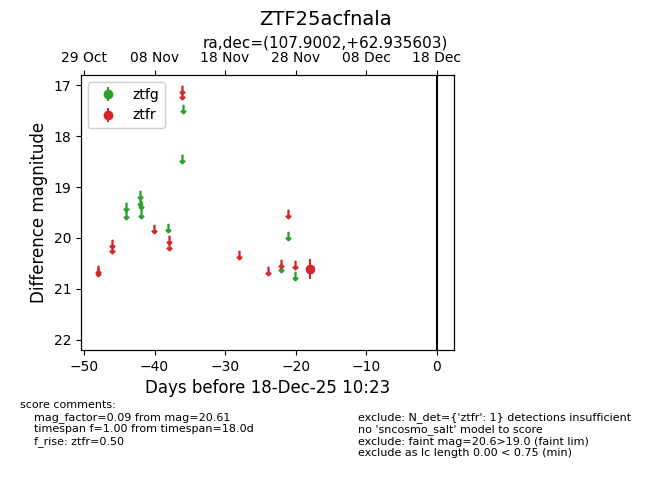
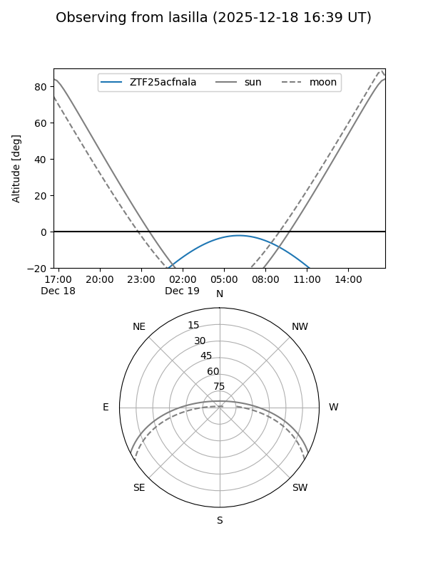
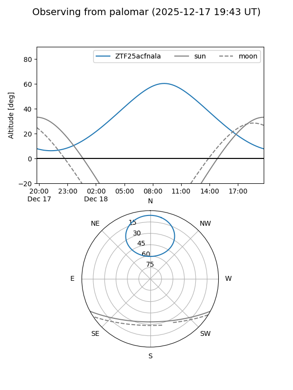

ZTF25acfnala
Target ZTF25acfnala at 2025-12-18 11:17
Aliases and brokers:
FINK: fink-portal.org/ZTF25acfnala
Lasair: lasair-ztf.lsst.ac.uk/objects/ZTF25acfnala
ALeRCE: alerce.online/object/ZTF25acfnala
alt names
ZTF25acfnala (ztf,fink_ztf)
Coordinates:
equatorial (ra, dec) = 107.9002,+62.93560
equatorial (HMS+DMS) = 07:11:36.04,+62:56:08.17
galactic (l, b) = (153.2742,+26.20798)
Photometry
last ztfr=20.61
1 ztfr detections
Lightcurve

Visibility


Additional plots